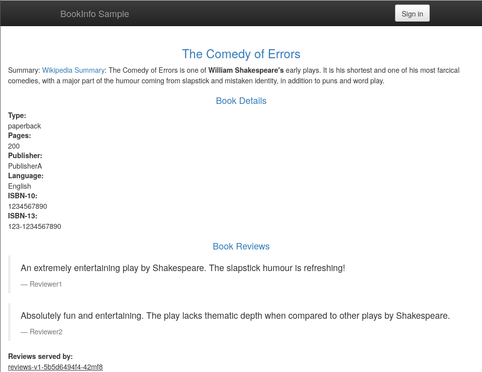

Istio
В данном практическом занятии познакомимся с работой istio service mesh в кластере kubernetes.
Vagrant
Для работы будем использовать следующий Vagrantfile:
Vagrant.configure("2") do |config|
config.vm.define "otel" do |c|
c.vm.provider "virtualbox" do |v|
v.cpus = 2
v.memory = 4096
end
c.vm.box = "ubuntu/lunar64"
c.vm.hostname = "otel"
c.vm.network "forwarded_port", guest: 8080, host: 8888
c.vm.provision "shell", inline: <<-SHELL
apt-get update -q
apt-get install -yq docker.io docker-compose-v2
usermod -a -G docker vagrant
curl -LO https://dl.k8s.io/release/v1.30.0/bin/linux/amd64/kubectl
curl -Lo ./kind https://kind.sigs.k8s.io/dl/v0.22.0/kind-linux-amd64
curl -L https://github.com/istio/istio/releases/download/1.21.2/istioctl-1.21.2-linux-amd64.tar.gz \
| tar xzf - -C /usr/local/bin/
install -m 755 kubectl kind /usr/local/bin/
rm kubectl kind
SHELL
end
end
Данная конфигурация установит на виртуальную машину docker, kubectl и kind, с помощью которых будет производиться развертывание и управление кластером kubernetes, а также утилита istioctl для управления istio.
Install
Создадим новый кластер с помощью утилиты kind передав конфигурацию, в которой
указаны дополнительные порты для доступа снаружи:
cat <<EOF | kind create cluster --config=-
kind: Cluster
apiVersion: kind.x-k8s.io/v1alpha4
nodes:
- role: control-plane
kubeadmConfigPatches:
- |
kind: InitConfiguration
nodeRegistration:
kubeletExtraArgs:
node-labels: "ingress-ready=true"
extraPortMappings:
- containerPort: 8080
hostPort: 8080
protocol: TCP
- containerPort: 8443
hostPort: 8443
protocol: TCP
EOF
И убедимся что он функционирует:
Creating cluster "kind" ...
✓ Ensuring node image (kindest/node:v1.29.2) 🖼
✓ Preparing nodes 📦
✓ Writing configuration 📜
✓ Starting control-plane 🕹️
✓ Installing CNI 🔌
✓ Installing StorageClass 💾
Set kubectl context to "kind-kind"
You can now use your cluster with:
kubectl cluster-info --context kind-kind
Not sure what to do next? 😅 Check out https://kind.sigs.k8s.io/docs/user/quick-start/
$ kubectl cluster-info
Kubernetes control plane is running at https://127.0.0.1:34283
CoreDNS is running at https://127.0.0.1:34283/api/v1/namespaces/kube-system/services/kube-dns:dns/proxy
To further debug and diagnose cluster problems, use 'kubectl cluster-info dump'.
Установим istio с помощью istioctl, добавим метку на неймспейс, чтобы
istio мог инжектить сайдкары, а также внесем изменения в конфигурацию
istio-ingressgateway для доступа снаружи:
$ istioctl install --set profile=demo -y
✔ Istio core installed
✔ Istiod installed
✔ Egress gateways installed
✔ Ingress gateways installed
✔ Installation complete
Made this installation the default for injection and validation.
$ kubectl label namespace default istio-injection=enabled
namespace/default labeled
$ kubectl patch deploy -n istio-system istio-ingressgateway -p '{"spec":{"template":{"spec":{"dnsPolicy":"ClusterFirstWithHostNet","hostNetwork":true}}}}'
deployment.apps/istio-ingressgateway patched
Deploy App
Развернем тестовое приложение для демонстрации работы service mesh:
$ kubectl apply -f https://raw.githubusercontent.com/istio/istio/release-1.21/samples/bookinfo/platform/kube/bookinfo.yaml
service/details created
serviceaccount/bookinfo-details created
deployment.apps/details-v1 created
service/ratings created
serviceaccount/bookinfo-ratings created
deployment.apps/ratings-v1 created
service/reviews created
serviceaccount/bookinfo-reviews created
deployment.apps/reviews-v1 created
deployment.apps/reviews-v2 created
deployment.apps/reviews-v3 created
service/productpage created
serviceaccount/bookinfo-productpage created
deployment.apps/productpage-v1 created
$ kubectl get pod
NAME READY STATUS RESTARTS AGE
details-v1-698d88b-5ctrm 2/2 Running 0 17m
productpage-v1-675fc69cf-qqnnr 2/2 Running 0 17m
ratings-v1-6484c4d9bb-kcj2d 2/2 Running 0 17m
reviews-v1-5b5d6494f4-42mf8 2/2 Running 0 17m
reviews-v2-5b667bcbf8-xsdvg 2/2 Running 0 17m
reviews-v3-5b9bd44f4-6njpm 2/2 Running 0 17m
После применения появится несколько связанных микросервисов. Входной точкой
является productpage, который отображает информацию с других сервисов -
details, rating и reviews.
Добавим конфигурацию, которая позволит направить трафик снаружи через
istio-ingressgateway в сервис productpage:
$ kubectl apply -f https://raw.githubusercontent.com/istio/istio/release-1.21/samples/bookinfo/networking/bookinfo-gateway.yaml
gateway.networking.istio.io/bookinfo-gateway created
virtualservice.networking.istio.io/bookinfo created
После чего сможем попасть в него через адрес localhost:8888/productpage:

Как было видно в списке подов находится несколько версий сервиса reviews, при
обновлениях страницы у нас будет меняться вывод блока Book Reviews:
Version Routing
Добавим конфигурацию destinationrules для разделения версий приложений с
помощью лейблов:
$ kubectl apply -f https://raw.githubusercontent.com/istio/istio/release-1.21/samples/bookinfo/networking/destination-rule-all.yaml
destinationrule.networking.istio.io/productpage created
destinationrule.networking.istio.io/reviews created
destinationrule.networking.istio.io/ratings created
destinationrule.networking.istio.io/details created
$ kubectl get dr
NAME HOST AGE
details details 6m58s
productpage productpage 6m58s
ratings ratings 6m58s
reviews reviews 6m58s
$ kubectl get dr reviews -o yaml
apiVersion: networking.istio.io/v1beta1
kind: DestinationRule
metadata:
creationTimestamp: "2024-05-12T21:22:11Z"
generation: 1
name: reviews
namespace: default
resourceVersion: "8361"
uid: d46d96ef-8605-426a-8d1c-4a09f48ba058
spec:
host: reviews
subsets:
- labels:
version: v1
name: v1
- labels:
version: v2
name: v2
- labels:
version: v3
name: v3
Теперь сконфигурируем virtualservice для выбора версии v1:
$ kubectl apply -f https://raw.githubusercontent.com/istio/istio/release-1.21/samples/bookinfo/networking/virtual-service-all-v1.yaml
virtualservice.networking.istio.io/productpage created
virtualservice.networking.istio.io/reviews created
virtualservice.networking.istio.io/ratings created
virtualservice.networking.istio.io/details created
$ kubectl get vs reviews -o yaml
apiVersion: networking.istio.io/v1beta1
kind: VirtualService
metadata:
creationTimestamp: "2024-05-12T21:32:36Z"
generation: 1
name: reviews
namespace: default
resourceVersion: "9509"
uid: 81f13936-a823-434c-90ec-39987b12b90b
spec:
hosts:
- reviews
http:
- route:
- destination:
host: reviews
subset: v1
После чего при любых обновлениях страницы
/productpage блок Book Reviews всегда
будет содержать первую версию:
С помощью команды kubectl edit или kubectl patch изменим версию на v3:
$ kubectl patch vs reviews -p '{"spec":{"http":[{"route":[{"destination":{"host":"reviews","subset":"v3"}}]}]}}' --type merge
virtualservice.networking.istio.io/reviews patched
После чего всегда будет отображаться версия v3 сервиса reviews:
User Routing
С помощью istio можно направить только часть трафика на определенную версию,
зададим конфигурацию virtualservice, которая направит трафик только для
пользователя jason на версию v2:
$ kubectl apply -f https://raw.githubusercontent.com/istio/istio/release-1.21/samples/bookinfo/networking/virtual-service-reviews-test-v2.yaml
virtualservice.networking.istio.io/reviews configured
$ kubectl get vs reviews -o yaml
apiVersion: networking.istio.io/v1beta1
kind: VirtualService
metadata:
creationTimestamp: "2024-05-12T21:32:36Z"
generation: 5
name: reviews
namespace: default
resourceVersion: "12531"
uid: 81f13936-a823-434c-90ec-39987b12b90b
spec:
hosts:
- reviews
http:
- match:
- headers:
end-user:
exact: jason
route:
- destination:
host: reviews
subset: v2
- route:
- destination:
host: reviews
subset: v1
Если зайти на страницу /productpage, то
блок Book Reviews будет содержать первую версию:
Если же нажать на кнопку Sign In и авторизоваться под пользователем jason,
то блок Book Reviews будет содержать вторую версию:
Таким образом с помощью istio service mesh можно настроить гибкую маршрутизацию трафика.